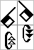
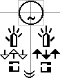

Binary SignWriting
HTML Reference

|
Binary SignWritingHTML Reference | |
Symbols come in several flavors: writing, sequence , and punctuation. Writing symbols represent shape or movement. Writing symbols are combined spatially on two dimensional canvases to form individual signs. This spatial writing for a sign is called the spelling or "Spatial SignSpelling".
Sequence symbols represent detailed locations and are only used in the sequence or "SignSpelling Sequence" of a sign. The SignSpelling Sequence is a list of writing symbols and sequence symbols. Most often, the symbols of the sequence are the same as used in the spelling, so it will not include sequence symbols. Sequence symbols are not used for everyday writing, but may be useful for sorting large dictionaries, refining animation, simplifying translation between scripts and notation systems, and for detailed analysis of location sometimes needed in linguistic research.
Punctuation symbols are used between signs, always alone in the middle lane.
Writing symbols can be divided into two groups, centering and non-centering. Head and torso symbols are centering symbols. The rest are non-centering. Centering symbols are important for determining the center of a sign. Each sign can be enclosed by a smallest possible rectangle called a bounding box. If a sign only has non-centering symbols, its center is the center of its bounding box.

If a sign contains centering symbols, then a centering bounding box is defined which only encloses the centering symbols of the sign. The center for such a sign is the center of its centering bounding box.

The completed signs are listed sequentially either horizontally or vertically. The signs are aligned based on their centers.
To represent changes to the center of gravity of a signer, SignWriting uses lanes for vertical writing. By default, signs are written in the middle lane with the center of the sign lined up with the center of the middle lane. For body weight shifts to the left or the right, the center of a sign can be offset to line up with the center of a left or right lane. The left and right lanes use a fixed horizontal offset from the middle lane.
Character encoding pairs a unique code (or number) to each character. Binary SignWriting uses fixed width 12-bit character codes: numbers between 0 and 4095 that can be represented with three hexadecimal characters.
If you look at the roadmap for the Supplementary Multilingual Plane, you'll see that room has been set aside for SignWriting in rows 1d8 thru 1db. The next four rows are blank but set aside for notation systems in general. If row 1dc can be reserved for SignWriting as well, this new encoding will fit properly in the space allotted.
A symbol is a specific fill and rotation of a BaseSymbol. A symbol shares the first 4 numbers of its symbol ID with the BaseSymbol. The fill value can range from 1 to 6, while the rotation can range from 1 to 16.
Each symbol has a unique key that is 5 hexadecimals long. The first 3 hexadecimals represent the BaseSymbol character. The 4th hexadecimal is equal to the fill minus one. The 5th hexadecimal is equal to the rotation minus one.
Each symbol has a unique code. The first symbol has a code of 1. Valid and invalid symbol positions are equally numbered, so 96 symbol codes are available per BaseSymbol. Using decimal values, a symbol code can be computed: ((BaseSymbol code - 256) * 96) + ((fill - 1) * 16) + rotation.
It requires three characters of Binary SignWriting to represent a specific symbol. The first character is the BaseSymbol character. The next character is the fill modifier, with a character code equal to the fill value plus decimal 907. The third character is the rotation modifier, with a character code equal to the rotation value plus decimal 913. Example "100 38c 392" in hexadecimal and " " in UTF-8.
A sign is a much more complex structure. It consists of a SignBox Maker with a cluster of spatial symbols and an optional sequence. A spatial symbol is five characters long. A writing symbol followed by 2 number characters. A valid cluster of spatial symbols is a list of zero or more spatial symbols. A valid sequence is a Sequence Marker followed by one or more writing symbols and/or sequence symbols.
| Name | Regular expression for token analysis | Description |
|---|---|---|
| SignBox Marker | [LBR] | Pick one: plain SignBox Marker, Left Lane SignBox Marker, Right Lane SignBox Maker |
| Writing BaseSymbol | [hmdftx] | Pick one: hand, movement, dynamic, head, trunk, or limb symbol |
| Spatial Symbol | [hmdftx]ionn | Writing BaseSymbol followed by a fill modifier, rotaion modifier and two number characters |
| Cluster | ([hmdftx]ionn)* | A list of zero or more spatial symbols |
| Sequence | Q([hmdftxs]io)+ | Sequence Maker followed by one or more writing symbols and/or sequence symbols |
| Sign | [LBR]([hmdftx]ionn)*(Q([hmdftxs]io)+)? | A SignBox Marker, followed by a cluster, followed by an options sequence |
| Punctuation | Pio | A punctuation BaseSymbol followed by a fill modifier and a rotation modifier |
| SignText | ([LBR]([hmdftx]ionn)*(Q([hmdftxs]io)+)?|Pio)+ | A list of signs and punctuation |
| Name | Token | BSW | UTF | Notes |
|---|---|---|---|---|
| Left Lane SignBox Marker | L | 0fa | | A marker for a new sign in the left lane |
| Middle Lane SignBox Marker | B | 0fb | | A marker for a new sign in the middle lane |
| Right Lane SignBox Marker | R | 0fc | | A marker for a new sign in the right lane |
| Sequence Marker | Q | 0fd | | A marker for a sequence of writing and sequence symbols |
| Hand BaseSymbols | h | 100 - 204 | - | A hand BaseSymbol from category 1. |
| Movement BaseSymbols | m | 205 - 2f6 | - | A movmement BaseSymbol from category 2. |
| Dynamic BaseSymbols | d | 2f7 - 2fe | - | A dynamic BaseSymbol from category 3. |
| Head BaseSymbols | f | 2ff - 36c | - | A head BaseSymbol from category 4. Responsible for primary centering. |
| Trunk BaseSymbols | t | 36d - 375 | - | A trunk BaseSymbol from category 5, SymbolGroup 27. Responsible for secondary centering. |
| Limb BaseSymbols | x | 376 - 37e | - | A limb BaseSymbol from category 5, SymbolGroup 28. Responsible for tertiary centering. |
| Sequence BaseSymbols | s | 37f - 386 | - | A non-spatial BaseSymbol that can only be used after the Sequence marker |
| Punctuation BaseSymbols | P | 387 - 38b | - | A non-spatial symbol always used by itself in the middle lane |
| Fill Modifiers | i | 38c - 391 | - | A fill modifier for a BaseSymbol |
| Rotation Modifiers | o | 392 - 3a1 | - | A rotation modifier for a BaseSymbol |
| Number Characters | n | 3a2 - 5f9 | - | Number range -299 thru 300 as characters to avoid collision when parsing |
The following is ASL for "Hello World."
0fb14c38e3924a54bd27138c3984bb4cf 0fb18738c39c4c04c618738c3934b94b020538c3924d14b32ef38c3924c949c 38838c392
The Token stream for this is:
Bhionnmionn Bhionnhionnmionnmionn Pio
If we consider the first sign, we find "Bhionnmionn". The first token is "B", a SignBox Marker in the middle lane. Next, there are 2 spatial symbols "hionn" and "mionn".
The next sign starts with the second "B" which has 4 spatial symbols. Finally, at the end we find a punctuation symbol "Pio".
The Symbol Frequency by BaseSymbol gives a usage count for each BaseSymbol and lists the symbols used from that BaseSymbol.